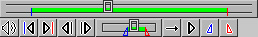
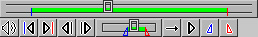

2006年08月08日 文責：浅岡 浩子
もくじ：
（ツールによっては、上記が全て配置されていません。）
トラッカーは、以下の操作などを行うためのインタフェースを提供します。
ムービーやサウンドファイルを再生する際にもトラッカーで操作するのが便利です。
 

以下のような配置のトラッカーもあります。
それぞれのトラッカーでボタンの配置などは多少異なりますが、基本的な操作は同じです。
ボタンやスライダーは、ウィンドウ内の下部に配置されています。
設定確認ビューファインダ、計算実行ビューファインダには以下のボタンやスライダーが配置されています。
基本的にはじゅんのムービープレイヤでも上記のボタンやスライダーが配置されています。
ただし、音量を変更できるボタンも配置されています。
また、じゅんのムービープレイヤでは、マーカーを有効にするとトラッカーのボタンが増えます。
以下のボタンやスライダーが配置されます。
1コマ戻しを行います。
↓ ボタン
マーカー無効時に、 [Shift]キーを押しながらボタンを選択すると、 再生ポジションが最初の位置に移動します。
↓ [Shift]キー ＋ ボタン
マーカー有効時に、 [Shift]キーを押しながらボタンを選択すると、 再生ポジションが開始点マーカーに移動します。
↓ [Shift]キー ＋ ボタン
1コマ送りを行います。
↓ ボタン
マーカー無効時に、 [Shift]キーを押しながらボタンを選択すると、 再生ポジションが最後の位置に移動します。
↓ [Shift]キー ＋ ボタン
マーカー有効時に、 [Shift]キーを押しながらボタンを選択すると、 再生ポジションが終了点マーカーに移動します。
↓ [Shift]キー ＋ ボタン
再生ポジションの位置の変更を行います。
第１スライダーの部分にマウスをもってゆき、 カーソルが (cross) の形になったところでクリックすると、 再生ポジションが移動します。
ドラッグでも変更できます。
トラッカーメニューでマーカーを有効にすると、 開始点マーカー、終了点マーカーを表示し、その位置の変更も行えます。
開始点マーカー（ ) の部分にマウスをもってゆき、 カーソルが (corner3) の形になったところでクリックすると、 開始点マーカーが移動します。
終了点マーカー（ ) の部分にマウスをもってゆき、 カーソルが (corner1) の形になったところでクリックすると、 終了点マーカーが移動します。
また、第１スライダーの緑色でクリップされた部分の下にマウスをもってゆき、 カーソルが (between) の形になったところでドラッグすると、 開始点マーカー、終了点マーカーの幅を保ちながら選択範囲をスライドさせることができます。
再生するモードを選択します。
これらを交互（順番）に設定する toggle（トグル）ボタンになっています。
再生開始および停止を行います。
再生開始と停止を交互に繰り返す toggle（トグル）ボタンになっています。
音量を調節します。
ボタンを押すとメニューが現れます。
再生ポジションが開始点マーカーに移動します。
↓ ボタン
再生ポジションが終了点マーカーに移動します。
↓ ボタン
現在の再生ポジションを開始点マーカーに設定します。
↓ ボタン
現在の再生ポジションを終了点マーカーに設定します。
↓ ボタン
開始点マーカーと終了点マーカーに囲まれた部分を、常に 0.1〜0.9 の間に正規化して表示します。
たとえば、長いムービーで、しかも開始点マーカーと終了点マーカーに囲まれた部分が短い時に、 第１スライダーで再生ポジションをコントロールするのは非常に難しいですが、
この第２スライダーを使えば簡単です。
スライダーの上で、右ボタンをクリックすると、トラッカーメニューが表示されます。
|
|
第１スライダーに、開始点マーカーや終了点マーカーが表示されます。
それぞれをの位置をマウスでドラッグで指定することができます。
↓ メニュー実行
ムービープレイヤでこのメニューを実行すると、第２スライダーやマーカーに関する操作が可能なボタンの表示が増えます。

↓ メニュー実行
|
|
開始点マーカーと終了点マーカーの設定を全体に設定します。
↓ メニュー実行
現在の再生ポジションを開始点マーカーに設定します。
↓ メニュー実行
現在の再生ポジションを終了点マーカーに設定します。
↓ メニュー実行
開始点マーカーと終了点マーカーを両方とも一番最初の位置にします。
↓ メニュー実行
開始点マーカーと終了点マーカーが消えて、マーカー無効時の状態にします。
↓ メニュー実行
↓ メニュー実行

じゅんのムービープレイヤのウィンドウを選択している時に、 下表のキーボードショートカットが使用できます。
※ 106 かな漢字キーボード対応
| [Shift]+ | [Ctrl]+ | ||
|---|---|---|---|
| Tab | 繰り返し再生／一方向再生 | ||
| Enter | 再生／停止 | ||
| Space | 再生／停止 | ||
| ← | １コマ戻し | 開始点マーカーへ移動 | |
| → | １コマ送り | 終了点マーカーへ移動 |
| [Shift]+ | [Ctrl]+ | ||
|---|---|---|---|
| p | ムービーの先頭へ移動 | ||
| e | ムービーの末尾へ移動 | ||
| f | 開始点マーカーへ移動 | ||
| l | 終了点マーカーへ移動 |
| [Shift]+ | [Ctrl]+ | ||
|---|---|---|---|
| [ | 現在位置を開始点マーカーへ設定 | ||
| ] | 現在位置を終了点マーカーへ設定 |